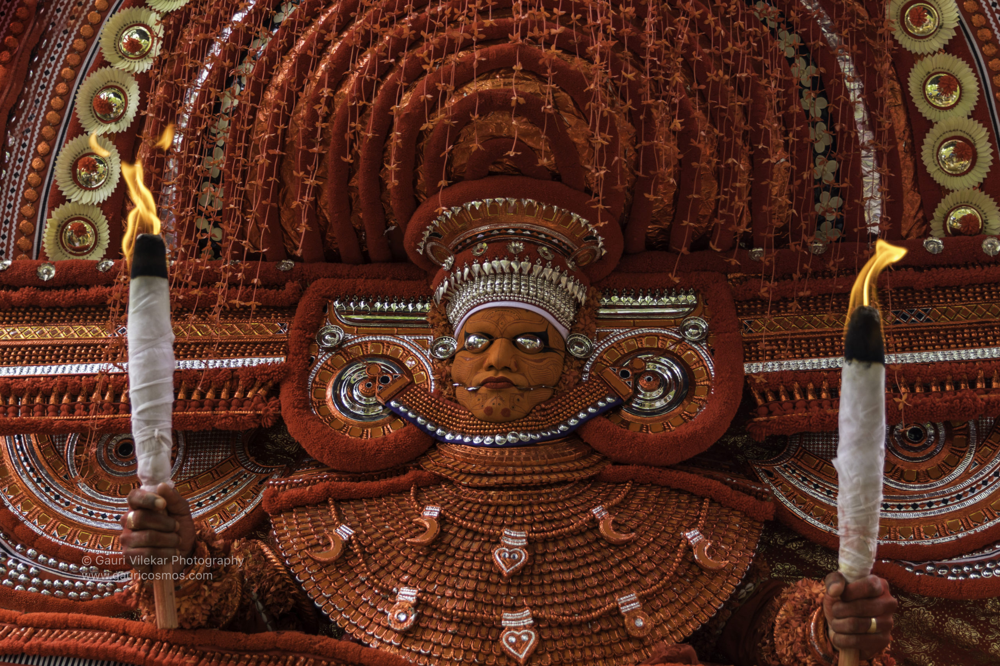
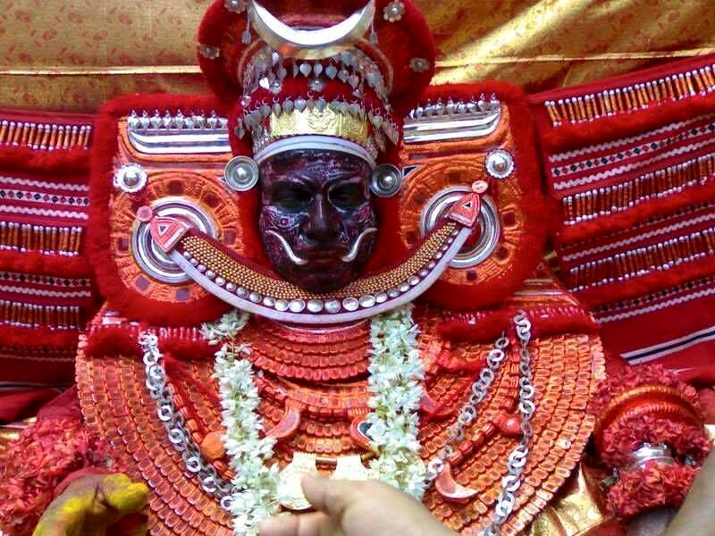
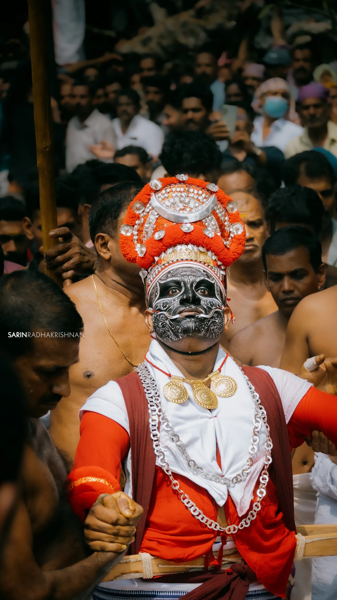

Muchilot Bhagavathi - The Goddess of Wisdom and Power
Muchilot Bhagavathi is one of the most revered deities in the Theyyam tradition of North Kerala. Worshipped especially by the Vaniya community, she represents female power, knowledge, and justice. Her story is filled with courage, wisdom,and divine grace. Muchilot Bhagavathi Theyyam is a grand ritual that honors her divine presence and keeps her legend alive through music, dance, and devotion.
The story of Muchilot Bhagavathi begins in a Brahmin household, where she born as a highly intelligent and spiritually gifted woman. She mastered the Vedas and Shastras - sacred Hindu texts - and began to teach others which was unusual for a woman in those days. This made many male scholars jealolus. To humiliate her, a group of Brahmins challenged her to a debate and asked her questions designed to confused her. But she answered everything with confidence and clarity. Still, they were not satisfied. As a last trick, they accusedher of impurity and tried to dishonor her. Hurt by their false accusations and unable to bear the insult, she left her body by entering fire (agni pravesham) and attained divine form. It is said that she rose from the flames as Muchilot Bhagavathi, a power goddess. Then she traveled to Muchilottu, a village in North Malabar, where she was welcomed and worshipped by the Vaniya community, who built temples and shrines in her honor.
The Muchilot Bhagavathi Theyyam is one of the most graceful and majestic forms of Theyyam :
The performer wears a huge crown (mudi) and elaborate facial makeup, often in red, white, and black.
The performance begins with ritual songs (thottam pattu) that narrate her life, trials, and transformation into a goddess.
The Theyyam moves in elegant and rhythmic steps, symbolizing her calm wisdom and hidden strength.
Offerings lik epuffed rice, coconut, turmeric, and oil lamps are placed before her shrine.
During performance, she blesses devotees, listens to their problems, and gives them spiritual guidance.
Muchilot Bhagavathi is worshipped mainly in Kannur nad Kasargod districts, especially by the Vaniya, though people from many communities pray to her. Devotees seek her blessings for :
Wisdom and knowledge
Courage to face injustice
Peace and prosperity in the family
Spiritual strength
Temples and kaavus across North Kerala conduct annual festivals during the Theyyam season (November to May) where Muchilot Bhagavathi is honored with full devotion. It is the celebration of divine wisdom, feminine power, and justice. Through this Theyyam, the goddess who once faced discrimination becomes a protector, teacher, and mother to thousands. Her story continues to inspire, and her blessings guide the lives of many in North Kerala.

Kakkunath Bhagavathi
Kakkunath Bhagavathi Theyyam is revered ritual performance held at the historic Sree Kakkunath Bhagavathi Temple in Iriveri, situated in the Chembilod Panchayat, Kannur district, Kerala.This temple, with a legacy spanning approximately 1300 years, i sdeeply rooted in the traditions of the Kakkoth family and stands as a testament to the rich cultural heritage of the region. The temple is renowned for its annual Theyyam Thira Mahotsavam, celebrated in the Malayalam month of Meenam (March - April). This festival is a vibrant display of devotion, drawing devotees and art enthuasists from various regions. The temple is unique in its inclusive approach, involving multiple communities in its rituals, symbolizing unity and shared cultural identity.
Legend has it that after praying to Sri Mahadeva for salvation from the demons who come to perform their penance in the land of Mamunis, Sri Jagadweeshwari, the Adi Parashakti, along with her messengers, as per the instructions of Sri Parameshwara, Sree kakkunnaths blessed with the presence of Bhagavathi. The homestead and land where Sree kakkunnath Bhagwati was present later came to be known as Kakkoth:
During the journey, the goddess was thirsty and lifted the bowl of the goddess from the Vellangadu tharavad…. Faith is still serving the devotees with porridge on the palla in the traditional way.
Kakkoth Tharavad senior karanavar (next heir in case of his inability) takes the position of embran and is the chief karmika for the temple functions.
Seven notes and one ebron are essential in the temple ceremonies, who are the sons of the male members of the family who are entitled to enter the temple sanctum sanctorum. Kalashakar, , Thiyanonnakan, Kurup, Melap. Santhanas like Trikaikuta and Kolu Vilak also join who is present in yoganidra in the chamber of Kakkoth Tharavad Ambaka, is lifted up to the temple for devotees to see and enshrined as Sarvabharan Vibhushitha, which makking the beginning of the festival known as Bhagavathy’s Omanakalyanam.
The senior man in the Kakkoth family takes care of the family for the sake of the family. The senior woman also holds the position of the family matriarch.... on days other than the prayer lamps in the temple on Tuesdays and Fridays, it is the duty of the matriarch to light the eternal lamp known as theli and anthithiri at the place of the family. ….
It is these Ammas who receive Embro Ney and the main Goddesses and Devas with rice during festival Temple Tantri Brahmashree Vellurillam Namboothiri and Nambyar community Tharavats like Melai, Melekorma and Kokurakarta, known as Karimpilat, Elavitil, Kokurakannot and Thikal bring water to Bhagwati and rice for offerings.

The face of the Kakkunath Bhagavathi Theyyam is painted predominantly in black, symbolizing the goddess's association with darkness, destruction of evil, and transformative power. This choice of color emphasizes her fierce and protective nature. The makeup is meticulously applied using natural pigments derived from materials like turmeric, rice, flour, and leaf extracts. Intricate patterns and symbols are drawn on the face, adhering to traditional styles such as Praakezhuthu, Sankezhuthu, and Varezhuthu. These designs are not merely decorative but hold symbolic meanings, representing various aspects of the deity's power and mythology.
An unusually large and ornate structure, the mudi is crafted from materials like bamboo and wood, then adorned with flowers, coconut leaves. The performer wears vibrant garments, often in shades of red and black, aligning with the themes of power and protection. Traditionsl jewelry and accessories made from natural materials complement the attire, adding to the deity's majestic appearance.